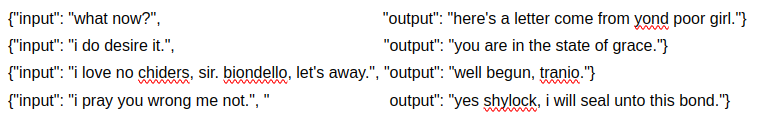
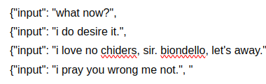
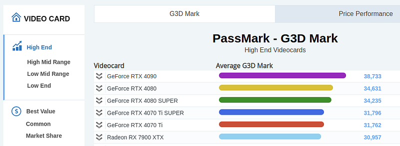

Most self-taught software engineers if you tell them "I am going to college for programming", they will say, "you don't need college for that". But if you say "I am going to college for machine learning", they will respond, "good job man, that is so cool."
Machine learning is one of those gate-kept fields, like medicine or a better example, chemistry. I will be transparent. My university courses on Machine Learning were the best. Professors teaching machine learning, the accountability of homework and guidance of a syllabus are invaluable to learning this field.
Recently with the advent of HuggingFace, open-source models and free learning materials online we are slowly making machine learning just like any other type of programming.
Though the majority of engineers have a degree, many perform well without university. These types read research papers, blogs, watch lectures and constantly trial and error model creation.
But machine learning costs money to learn. There is no getting around it. Those who are self-taught have to rent GPUs by the hour to practice large models. Without that we are stuck with small models on our home GPU which is a lot tougher to learn from.
That is one of the key advantages of a university. If they are good, they usually have GPU servers which come with tuition.
Why study Machine Learning?
But why would we study it? How do we as programmers benefit from machine learning?
Some programmers just love it. The process of creating a piece of software capable of human-like decisions just excites them.
Programmers like specific topics
For me, I only feel this way about language processing and code generation. I love the idea of creating an intellectual entity regarding some topic.
My own personal programming assistant, my own text writer. I can ask it to do anything in English and code. So cool.
But others love vision. They like distinguishing between two types of images. And, of course, programmers like generating art for whichever purpose. Generating erm, what they call "art" typically is the motivation behind most vision learners.
I do not agree with it, however it is reality. It was one of the primary reasons vision progressed so much farther than language.
For me, the coolest thing is getting an uncensored model. Man, that is cool. I am a Christian so what I like to generate are apologetics arguments, funny historical memes and code on private software.
At one point I created a bunch of hilarious songs with an uncensored music generator. In my Discord community we used it to create all kinds of music. We had a good time. Programmers get excited by these results.
These topics are transferable
And like me, most machine learning engineers only like specific topics. What is cool-these topics are highly transferable. You can specialize in vision for years then make a switch to language.
Your vision skills transfer to other topics in machine learning. What you know about PyTorch, R, Python, ML theory, you never really start over in this field.
Though you have to learn all the theory behind vision or language processing-the new topic will be easier than the first topic. For sure it is good to specialize.
What is machine learning?
Machine learning is creating really complex algorithms. We use a combination of math and programming to create a piece of software which makes complex decisions.
In vision we take each pixel from top left to top bottom, turn the pixel color into a number and mathematically process the pixel numbers for some output.
In language processing, we convert each word into a number and mathematically process it into some other numbers.
For audio we convert the volume, pitch, etc. into numbers then process those one after the other until the end of the sound. Then we use math for some output.
The general process is to convert input to numbers then use math to create an output. And we do it with programming.
There is always some type of guidance by the machine learning engineer. In both knowing the output (supervised) and not knowing the output (unsupervised) of our algorithm. Us, the engineer, guides the model.
The differences are the methodologies used by the programmer.
Reducing error
Our goal in both unsupervised and supervised machine learning is to reduce the error of the model for some output.
For supervised learning it is called reducing loss.
For unsupervised learning we develop a pattern. We teach the model to reduce error away from the input pattern.
 Models run by minimizing error for the output for both supervised and unsupervised learning. Past engineers have created many methods for creating these algorithms.
Clustering, association rules, gradient descent-these are methods in machine learning all about reducing error.
The most straight-forward way to explain reducing error is with supervised learning.
Let's say you want to teach a model when knowing the output:

We give the machine an input and say, "produce an output". Then we work backward from output to input, adjusting the math of the algorithm. We intentionally program a plastic algorithm. Working backward-we produce output more and more similar to the output. We reduce future error for the model
We teach the algorithm to output that text, or that image by changing the algorithm itself.
This plasticity is why we refer to this field as machine learning. The plastic nature of these formulas AKA models are how a machine learns.
What machine learning is today
For these plastic algorithms we have 3 distinct eras of machine learning. There was a theoretical era from the 60s to the 90s. There was a classical era from the 90s to the 2010s. And, now there is the modern era past 2012.
We have always had neural networks from the beginning of computing. In the 50s and 60s we already knew modern mathematics for machine learning.
Even convolutional neural networks (the most common way to do advanced vision) was invented in 1988. This is the stuff of legend-how we perform modern algorithms.
These dates are surprising because modern machine learning is recent. Yet, all the theories are old. If we had neural networks in the 60s and modern vision in the late 80s, why the heck did we not use them?
From transformers to diffusion, why are we suddenly making so much progress in machine learning today?
Why we are making so much progress
Hardware...
Hardware is the main reason we had to wait so many decades to finally test our machine learning theories. It is why we are suddenly growing.
The moment our hardware became capable, we started researching how to create algorithms.
These 3 distinct eras exist because hardware limited us to them. The theoretical era of the 60s could not make it past the paper because our machines were the size of entire rooms.
The classical era of the 90s to the 2010s could not use complex neural networks because our processing needed to reach the threshold.
In the classical era we made lightweight algorithms which used less hardware. They were less performant, but they fit the hardware we had.
Deep learning AKA neural networks are what made the modern era. We finally became somewhat capable in the early 2010s with the release of various deep learning models.
Today's limitations
Today we are still limited by hardware. The average programmer can't test all their ML theories without a GPU with 20GB+ VRAM. Chat-GPT uses 100s of Gigabytes of VRAM constantly.
Today we are developing better hardware every year. Benchmarks from 2024 to 2022 show massive memory, processing and wattage improvements.
Why did it take so long to develop text generation like Chat-GPT? It was hardware, we never had the technology to create these algorithms in the physical until now.
We were finally ready for the modern era. We are growing and these are exciting times.
Best resources For learning ML
If you are interested in learning ML I have some recommendations for you. Normally I do not encourage going to school for programming. But for graphics programming and ML I do recommend schooling.
You can go to college, take some machine learning courses and see if you like it. On your journey you can try out some free resources.
I have tried all of these. I skimmed and started a lot of books, lectures and resources out there. All the ones I am recommending here I finished completely because they were that good.
I am putting them in order of difficulty. From an introduction to Machine Learning by StatQuest to the full out mathematical explanations by 3Blue.
The hundred page book is an affiliate link at no cost to you.
Introductory YouTube channel: https://www.youtube.com/@statquest
Numpy, Pandas introduction: https://www.dataquest.io/
Introduction to PyTorch: bit.ly/3vOFFH5
The hundred-page machine learning book: https://amzn.to/446wzBT
Transformers: https://mlabonne.github.io/blog/
Best explanations: https://www.youtube.com/@3blue1brown/videos
Anywho, I hope you learned something...
CTA: Check out my book on learning code
Happy coding!
Resources
What is huggingface: Why Hugging Face is Essential for Every Machine Learning Programmer